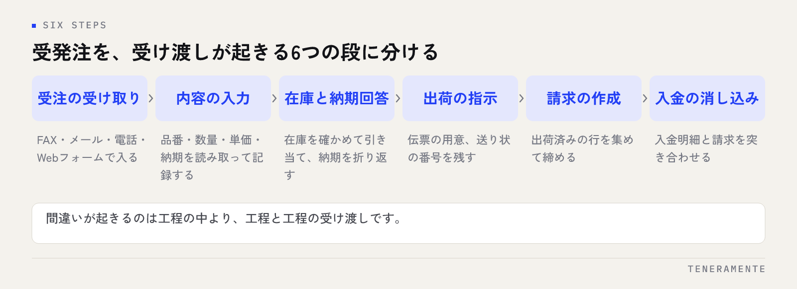

受注はFAXと電話で入り、内容はExcelに転記し、在庫は別のファイル、請求は会計ソフトに打ち直す。この形でも仕事は回りますが、人が増えても楽にならないのが受発注管理の難しさです。結論から申し上げると、受発注のシステム化で成否を分けるのは工程の絞り方です。この記事では、受発注管理システムを中小企業が小さく始めるための手順と、費用の考え方を整理します。
📌 この記事の結論
受発注管理は全部を一度に置き換えるのではなく、受注の入口と入力を1本にそろえることから始めるのが近道です。工程を6つに分けて棚卸しし、効果が毎日出て難易度の低いところから順に移すと、途中で止まりません。
01受発注管理が紙・FAX・Excelのままだと、どこで時間が溶けるのか
受発注の手間は、ひとつの大きな作業ではなく、小さな確認の積み重ねとして現れます。FAXの文字が読み取りにくいので電話で確認する。Excelに転記したあと、品番と数量を目で見比べる。在庫ファイルを開いて引き当て、納期を折り返す。出荷したら送り状の番号を別の表に書き写す。月末には、納品書の控えと請求書を突き合わせる。
一つひとつは数分で終わります。だからこそ改善の対象になりにくく、合計すると大きな時間になっていると気づきにくいのです。
もう一つの問題は、同じ情報を何度も打ち込んでいることです。受注票、在庫ファイル、出荷伝票、請求データに、同じ品番と数量と単価が別々に入っています。どこか一か所を直したときに他が直らないので、「どれが正しいのか」を人が覚えておかなければなりません。担当者が休んだ日に止まるのは、能力の問題ではなく、情報が人の頭にしか無いからです。
受注量が増えたときに最初に壊れるのは、この突き合わせの部分です。繁忙期に残業が増えるのに売上が伸びない会社では、増えた仕事の多くが確認作業になっています。
02手を付ける前に、受発注の流れを6つの工程に分けて棚卸しする
システムを探す前に、自社の受発注が今どう流れているかを工程に分けて書き出します。大きく見ると、受発注は6つの段に分かれます。

この棚卸しで書き込むのは3つだけです。その工程を今だれがやっているか、1件あたりどれくらい時間がかかっているか、間違いが起きるのはどの工程か。時間は担当者の体感で構いません。
書き出すと、たいてい2つのことが分かります。ひとつは、時間がかかっているのは受注そのものではなく、受注内容を読み取って別の場所に移す作業だということ。もうひとつは、間違いが起きるのは工程の中ではなく、工程と工程の受け渡しだということです。
受け渡しで情報が落ちているなら、そこをつなぐのが最も効きます。工程の中の作業を速くする工夫より先に、受け渡しをなくす設計を考えます。考え方の全体像は業務アプリ開発の完全ガイドでも整理しています。
03どこから着手するかは、効果と難易度で並べて決める
棚卸しができたら、着手の順番を決めます。判断の軸は2つで、効果がどれくらいの頻度で出るかと、移すのがどれくらい難しいかです。
| 着手の候補 | なくせる手間 | 効果の出方 | 難易度 |
|---|---|---|---|
| 受注内容の入力 | 読み取りと転記、品番・数量の見比べ | 受注が入るたび毎日 | 低い |
| 在庫の引き当てと納期回答 | 別ファイルを開く、折り返しの電話 | 受注のたび、問い合わせのたび | 中くらい |
| 出荷の指示と伝票 | 伝票の手書き、送り状番号の書き写し | 出荷のたび | 中くらい |
| 請求データの作成 | 受注表から請求への打ち直し | 月末にまとめて | 低い |
| 入金の消し込み | 入金明細と請求の突き合わせ | 月末にまとめて | 中くらい |
| 仕入・発注の管理 | 発注残の把握、入荷予定の確認 | 発注のたび | 高い |
毎日効いて難易度が低いものが最初です。多くの会社では、受注内容の入力がここに入ります。月末にまとめて効くものは、効果は分かりやすいのですが、月に一度しか検証できないので直すのに時間がかかります。
難易度が高いものを最初に選ぶと、設計の議論が長引き、動くものに触れるまでに時間がかかります。途中で現場の関心が切れるのが、この順番の失敗です。小さく始める考え方は社内ツールのスモールスタートでも触れています。
04受注の入口をそろえる（FAX・メール・電話・Webフォーム）
受注の入口が複数あること自体は、無理に一本化しなくて構いません。取引先には取引先のやり方があり、こちらの都合で変えてもらうのは簡単ではないからです。そろえるのは、入口ではなく入ったあとの置き場所です。
どの経路で来ても、受注として同じ1件の記録になる形にします。実務では次のように受け止めます。
- Webフォームや取引先向けの受注画面から来たものは、そのまま記録になる
- メールは、添付や本文を取り込んで記録の下書きにし、人が内容を確認して確定する
- FAXは、画像を記録に添付して、品番と数量だけを人が入力する
- 電話は、聞き取りながら記録に直接入力し、復唱して確認する
この形にすると、入口が4つあっても、見る場所は1つになります。「あの注文はFAXで来たから、あのクリアファイルの中」という探し方が消えるのが、最初に実感できる変化です。
取引先ごとの品番の呼び方の違いは、ここで吸収します。相手の呼び方と自社の品番を対応づけて持たせておくと、受注のたびに読み替える作業がなくなります。
05在庫・納期・出荷と、請求・入金までを1本につなげる
受注が1件の記録になったら、その記録に後ろの工程をぶら下げていきます。別の表を作らないことが肝心です。
在庫は、受注の記録から引き当てます。引き当てた数が在庫から減り、足りなければ発注残として残る形にすると、納期の回答が記録を見るだけで済みます。ここで「実在庫」と「引当済み」を分けて持つのが要点です。倉庫には物があるのに別の注文に充てる予定だった、という行き違いは、この区別がないときに起きます。
出荷は、受注の記録に出荷の情報を足します。出荷した数量・日付・送り状の番号を同じ記録に残すと、取引先からの問い合わせに一画面で答えられます。分納や一部出荷があるなら、最初から複数回の出荷を記録できる形にしておきます。
請求は、出荷の実績から作ります。受注の記録から請求を打ち直すのではなく、出荷済みの行を集めて締める形です。入金は、請求に対して消し込みます。一部入金や取引先単位のまとめ入金があるなら、それも記録できるようにしておきます。
つなぐ順番の目安
受注 → 出荷 → 請求の順でつなぐと、途中で止めても使える状態が残ります。先に在庫から作ると、在庫の精度が出るまで誰も使えない期間が生まれます。詳しくは業務アプリ開発の完全ガイドもあわせてご覧ください。
06小さく始めるときの進め方と、費用の考え方
進め方は、最初から完成形を目指さず、工程を1つか2つに絞って触れる形を作り、使いながら直すのが確実です。実際の受注データで1週間使うと、設計の話では出てこなかった例外が出てきます。例外を知ってから次を作るほうが、作り直しが少なくなります。
既製のサービスを使うか、自社に合わせて作るかは、例外の多さで決まります。業界の標準的な流れで収まるなら既製のものが早く、取引先ごとの取り決めが多いなら合わせて作るほうが現場の手間が減ります。両方を組み合わせて、会計や在庫は既製のもの、受注の入口だけ自社に合わせる形も現実的です。
費用は、何に対して払うのかを分けて見ると比べやすくなります。
| 費用の種類 | 何に対して払うか | 見積で確かめること |
|---|---|---|
| 初期費用 | 要件の整理、設計、作成、既存データの移行、公開作業 | どこまでが含まれるか。データ移行が別見積になっていないか |
| 月額費用 | サーバー、保守、バックアップ、小さな修正 | 「小さな修正」の範囲。障害時の連絡の窓口と時間帯 |
| 追加開発 | 機能の追加、取引先の追加対応 | 都度見積か、時間単価か。見積の出る早さ |
| 社内の工数 | 現場のヒアリング、検証、データの整理、教育 | 誰がどれくらい時間を出せるか。繁忙期と重ならないか |
見落としやすいのは最後の社内工数です。外注費がいくらでも、現場が検証に時間を出せなければ進みません。着手の時期は、繁忙期を外して決めます。
07導入前のチェックリストと、よくある失敗とその避け方
着手の前に、次の項目を埋められるか確かめます。埋まらない項目があるなら、そこが先に決めるべきことです。
- 受発注の工程を書き出し、1件あたりの時間と間違いの起きる場所が分かっている
- 最初に移す工程を1つか2つに絞って決めてある
- 受注の入口が何種類あり、それぞれ何件くらい来るかを数えてある
- 取引先ごとの特別な取り決め（品番の呼び方、締め日、分納の有無）を一覧にしてある
- 既存のExcelのうち、移すもの・残すもの・捨てるものを分けてある
- 現場側の担当者が決まっていて、検証の時間を確保できている
- 止まったときに紙で回す手順が決まっている
- 入力の責任をだれが持つか（受注の確定を押すのは誰か）が決まっている
よくある失敗は、だいたい次の4つです。
全部の工程を一度に置き換えようとする。設計の議論が終わらず、動くものを見るまでに時間がかかります。工程を絞れば、2週間ほどで触れる形にできる範囲があります。
今のExcelをそのまま画面にする。現在のExcelには、システムが無いから仕方なくやっている手順が混ざっています。そのまま移すと、無駄も一緒に移ります。工程の棚卸しをしたのは、これを見分けるためです。
現場に相談せずに決める。受発注の例外は現場が持っています。公開してから「この取引先はこの形では処理できない」と分かると、結局Excelが復活します。
二重入力の期間を長く取りすぎる。安全のために旧来のExcelと並行させるのは正しいのですが、期間を決めずに始めると、両方を更新する手間が定着してしまいます。並行は期間を切り、切り替え日を先に決めます。
08自分で進める場合と、専門家に任せる場合の分かれ目
社内で進められるかどうかは、人の有無よりも、扱う情報の性質と例外の多さで決まります。
自社で進めやすいのは、受注の形が決まっていて取引先ごとの例外が少なく、既製のサービスの範囲で収まる場合です。社内に表計算や業務ツールの設定を一通りできる人がいて、その人が片手間ではなく時間を取れるなら、小さく作って運用まで持っていけます。
専門家に相談したほうがよいのは、次のような場合です。取引先ごとの取り決めが多く、既製のサービスの設定では表現しきれないとき。在庫や会計の既存システムとデータをやり取りする必要があるとき。受注の内容に価格や取引条件が含まれ、閲覧できる人を分けなければならないとき。そして、作ったあと何年も使い続ける前提で、保守の担い手を社内に置けないときです。
判断の分かれ目は、作ったあとに誰が直し続けるかにあります。作る作業は一度で終わりますが、取引先が増え、商品が変わり、締めの運用が変わるたびに手を入れる必要があります。その担い手が社内に置けないなら、作る前からその体制を含めて相談するほうが、結果として安く収まります。
09よくある質問
受発注管理システムは、どれくらいの期間でできますか？
FAXでの受注が多いのですが、やめられません。システム化できますか？
今のExcelのデータは引き継げますか？
既製のサービスと、自社に合わせて作るのはどちらがよいですか？
社内に詳しい人がいませんが、進められますか？
10まとめ：受発注のシステム化は、工程を絞って小さく始める
受発注管理の改善は、全部を置き換える計画ではなく、工程を分けて順番を決める作業から始まります。6つの工程に棚卸しし、毎日効いて難易度の低いところから移す。入口は無理に一本化せず、入ったあとの置き場所をそろえる。そして受注から出荷、請求へと後ろの工程をぶら下げていく。この順番なら、途中で止めても使える状態が残ります。
TENERAMENTEなら、この記事で挙げた工程の棚卸しからご一緒し、受注の入口をそろえる部分だけを切り出して、最短2週間でPoC（試作）として触れる形にできます。FAXやメールで届いた受注を1件の記録にまとめ、出荷・請求までを同じ記録でつなぐところまで、要件定義から運用まで内製チームで一貫して進めます。開発費30万円〜・月額3万円〜（保守込み）で、取引先が増えたときの手直しも含めて続けられる形にしますので、転記と突き合わせに使っていた時間が、受注そのものに向けられるようになります。進め方の詳細はAI×Webアプリ開発にまとめていますので、自社の受発注のどこから手を付けるべきか迷われている段階でも、お問い合わせからお気軽にご相談ください。